Propagazione continua indipendente. P = probabilità target; F = √P.
Durata fisica T = 104.7197551. T = 20 × tau_s; tau_s = pi/(2*g_ref) = 5.235987756, g_ref = 0.3.
Validazione numerica, raggiungimento del target e convergenza dell'ottimizzatore sono criteri distinti. Nessun risultato implica da solo un quantum speed limit.
Tabella CSV · Configurazione · Provenienza
| case | seed | cohort | P_target | F_root | purezza | validato | obiettivo_raggiunto | fluence_modulazione | banda99_peggiore | potenza_sopra_soglia | P_iniziale | P_CRAB | guadagno_GRAPE | iterazioni_GRAPE | gradiente_proiettato_iniziale | gradiente_proiettato_finale | max_fotoni | P_hold_min |
|---|---|---|---|---|---|---|---|---|---|---|---|---|---|---|---|---|---|---|
| 1q | 100 | random | 0.999454 | 0.999727 | 0.99938 | True | True | 51.119 | 4.74 | 0.166508 | 1.5335e-06 | 1.93434e-05 | 0.999429 | 80 | 0.00291731 | 0.000938298 | 10.0029 | 0.0623973 |
| 1q | 101 | random | 0.998805 | 0.999402 | 0.99866 | True | True | 51.6149 | 4.5 | 0.213912 | 1.55554e-07 | 4.5191e-06 | 0.998783 | 80 | 0.00136886 | 0.000888339 | 10.0093 | 0.0657282 |
| 2q_normalized_independent | 100 | random | 0.997769 | 0.998884 | 0.99661 | True | True | 105.49 | 4.8 | 0.188643 | 2.8478e-08 | 3.95836e-08 | 0.997713 | 80 | 0.000130204 | 0.00152088 | 10.0072 | 0.0704109 |
| 2q_normalized_independent | 101 | random | 0.998211 | 0.999105 | 0.997917 | True | True | 121.128 | 4.26 | 0.135406 | 5.03296e-09 | 3.3503e-08 | 0.998201 | 80 | 0.000250613 | 0.000764325 | 10.0396 | 0.0608556 |
Statistiche: {"count": 2, "probability_mean": 0.9991292579204119, "probability_std_population": 0.0003245501333942191, "probability_median": 0.9991292579204119, "probability_min": 0.9988047077870176, "probability_max": 0.999453808053806, "numerically_valid_count": 2, "validated_goal_count": 2, "validated_goal_fraction": 1.0, "probability_q25": 0.9989669828537147, "probability_q75": 0.9992915329871089, "selection_bias_top_only": false}
Probabilità target senza modulazione: 0.00000000.
Controlli falliti: nessuno
DettagliMaximum number of function evaluations has been exceeded.; STOP: TOTAL NO. OF ITERATIONS REACHED LIMIT
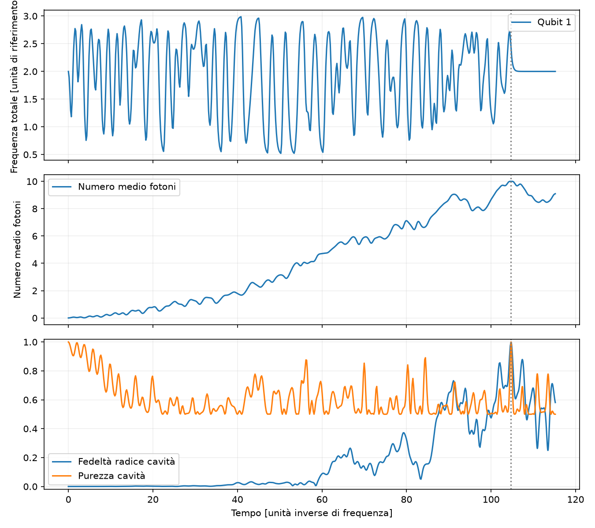
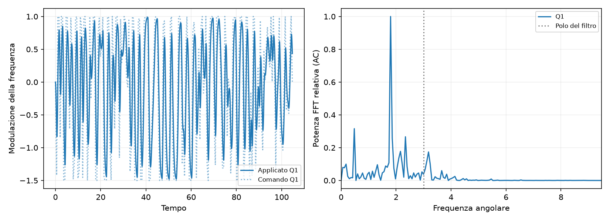
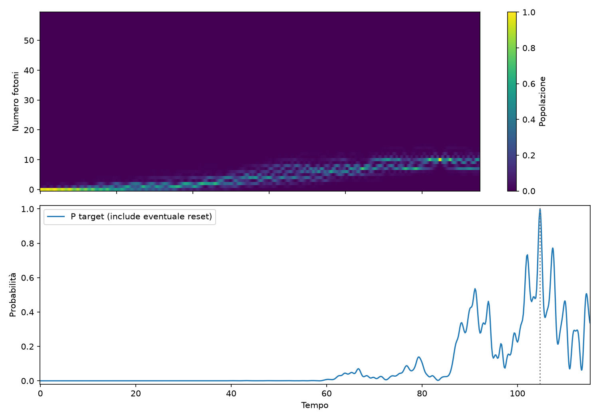
Controlli falliti: nessuno
DettagliMaximum number of function evaluations has been exceeded.; STOP: TOTAL NO. OF ITERATIONS REACHED LIMIT
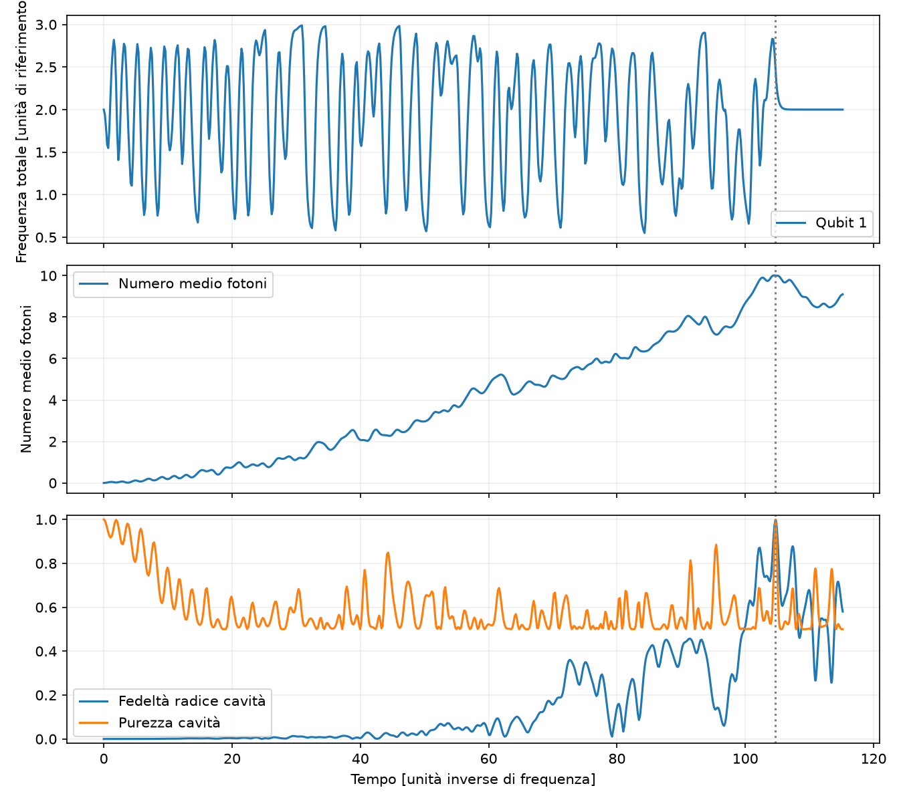
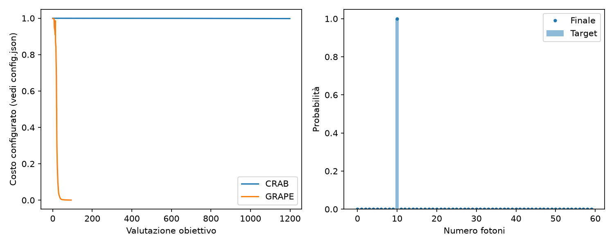
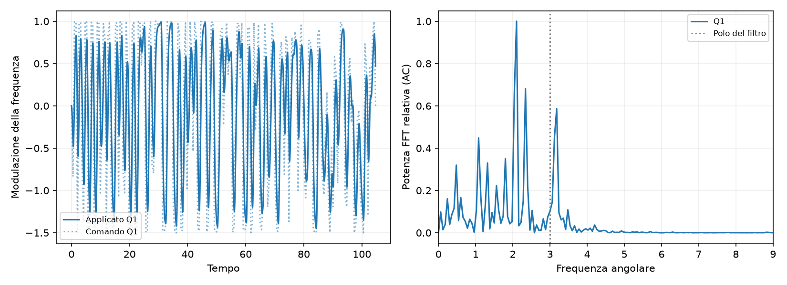
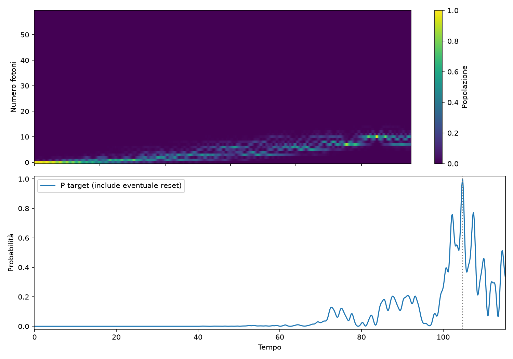
Statistiche: {"count": 2, "probability_mean": 0.9979898517459843, "probability_std_population": 0.00022092108789451004, "probability_median": 0.9979898517459843, "probability_min": 0.9977689306580898, "probability_max": 0.9982107728338788, "numerically_valid_count": 2, "validated_goal_count": 2, "validated_goal_fraction": 1.0, "probability_q25": 0.9978793912020371, "probability_q75": 0.9981003122899316, "selection_bias_top_only": false}
Probabilità target senza modulazione: 0.00000000.
Controlli falliti: nessuno
DettagliMaximum number of function evaluations has been exceeded.; STOP: TOTAL NO. OF ITERATIONS REACHED LIMIT
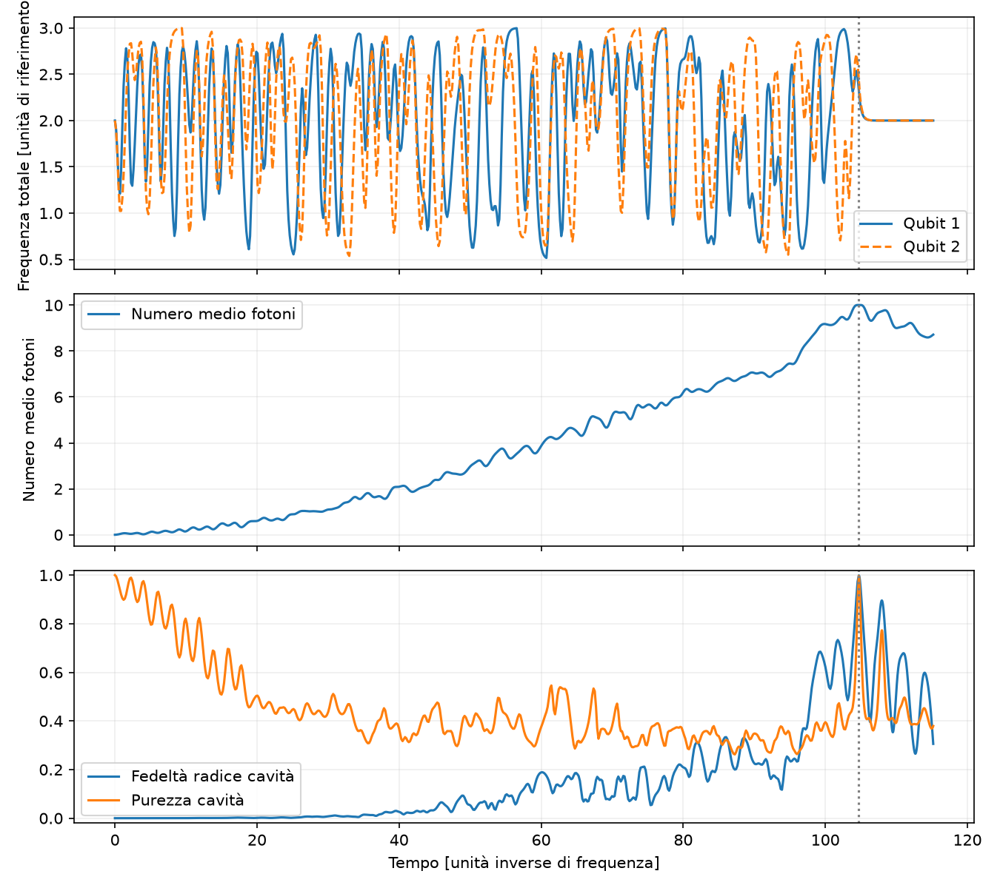
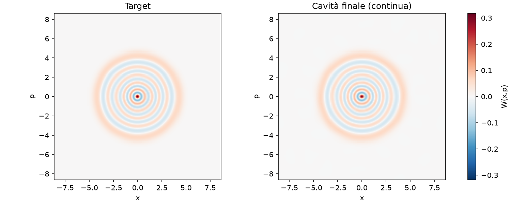
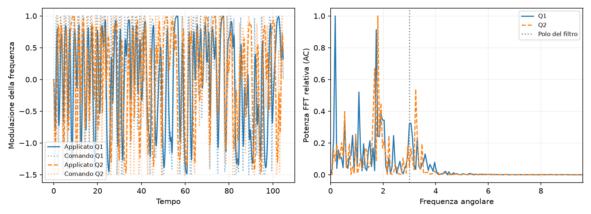
Controlli falliti: nessuno
DettagliMaximum number of function evaluations has been exceeded.; STOP: TOTAL NO. OF ITERATIONS REACHED LIMIT
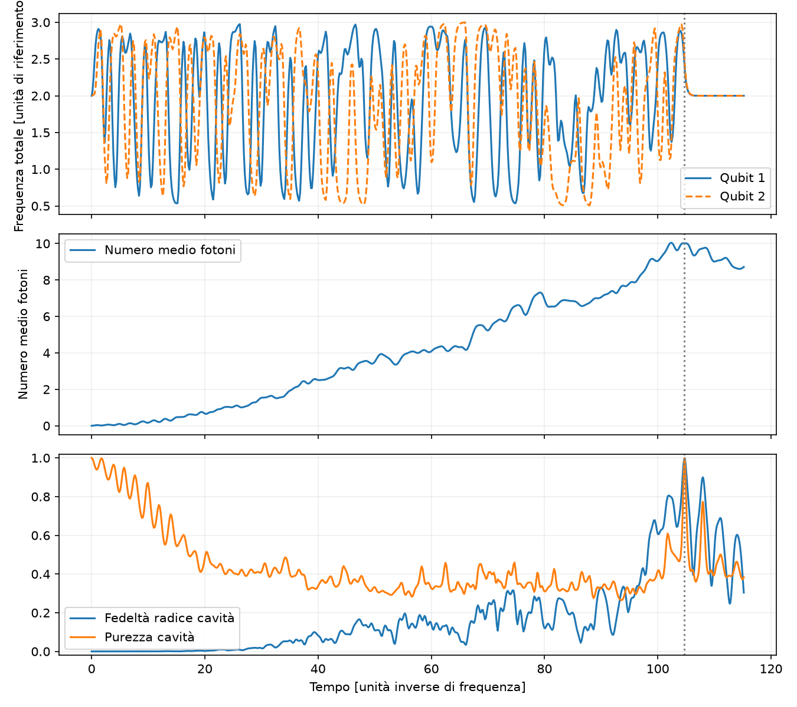
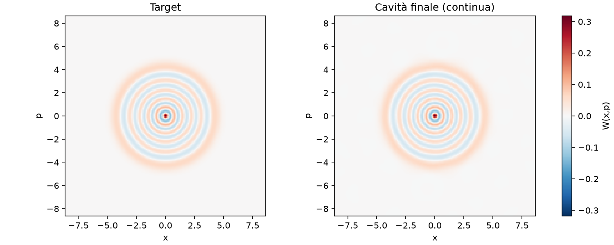
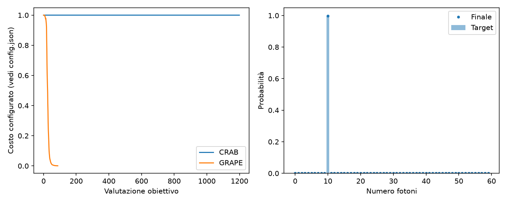
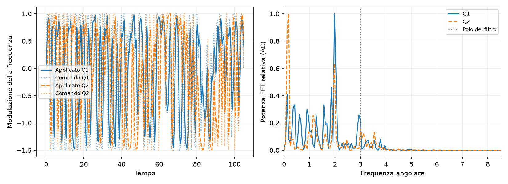